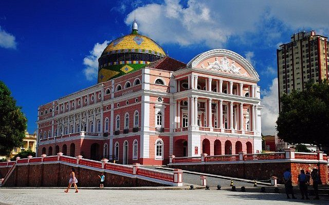
Landmark
Teatro Amazonas
The pink opera house from 1896, a symbol of the rubber-boom era and the city's most photographed landmark in the historic centre.
Most travelers reach the Rio Negro through Manaus, the heart of the Amazon. Before or after your stay with us, explore the city's most iconic sights — here are our local favorites.
A handpicked list of the places worth seeing in and around the city.

The pink opera house from 1896, a symbol of the rubber-boom era and the city's most photographed landmark in the historic centre.
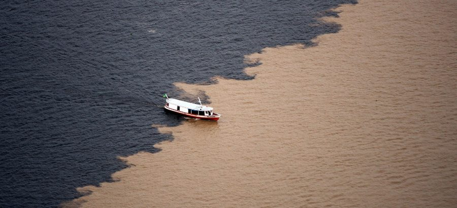
Where the dark Rio Negro and the sandy Solimões run side by side for kilometres without mixing — a must-see Amazon phenomenon by boat.
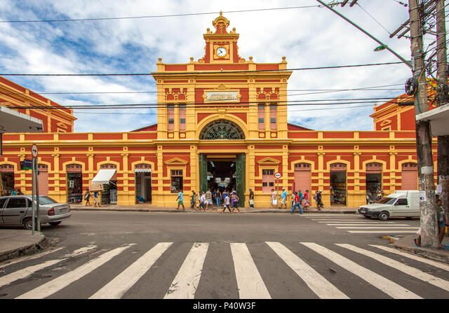
A riverside Art Nouveau market from 1882, full of regional fruits, fish, herbs and handicrafts — perfect to taste the real Amazon.
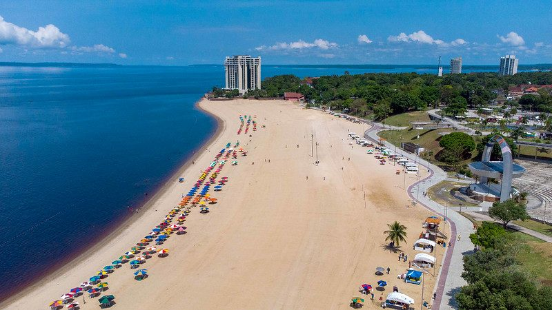
The city's lively urban beach and boardwalk, with restaurants, river views and one of the best sunsets in Manaus.
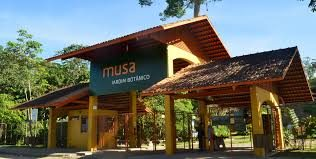
A living rainforest museum with a 42-metre observation tower offering sweeping views over the canopy and the city.
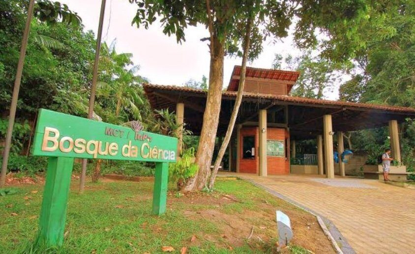
A forest park inside the city where you can see manatees, otters and giant Amazon water lilies up close.
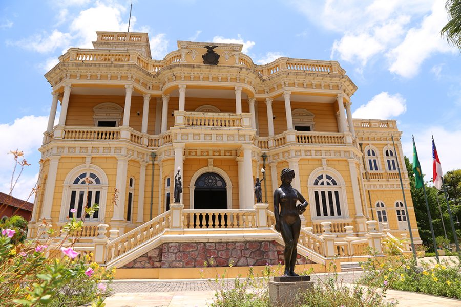
A restored rubber-baron mansion, now a cultural centre with art exhibitions and elegant period rooms.
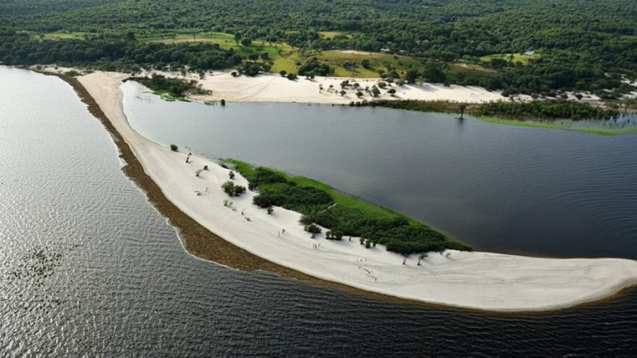
A quiet white-sand river beach reached by boat on the Rio Negro — ideal to swim and relax away from the crowds.
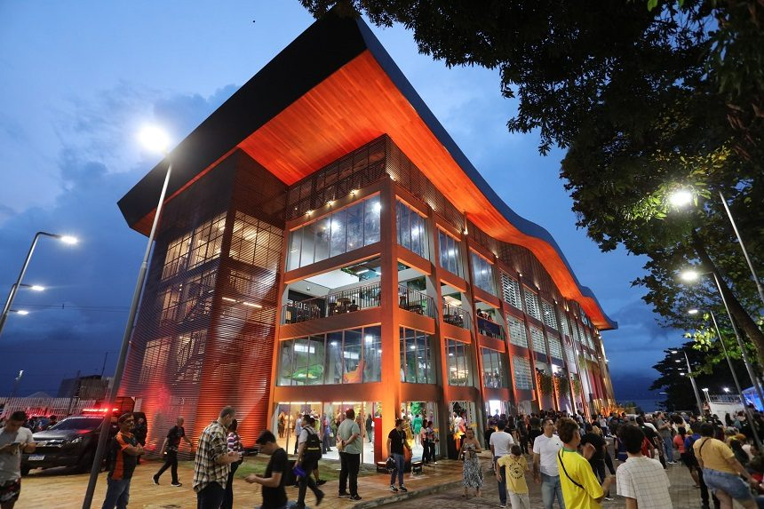
A panoramic viewpoint in central Manaus overlooking the Rio Negro and the city rooftops — a favorite spot for photos, especially at sunset.
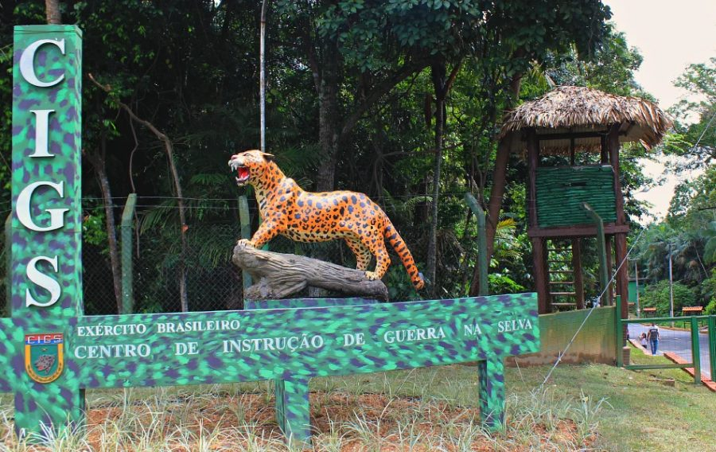
The army's jungle-warfare centre zoo, home to rescued Amazon animals — jaguars, monkeys, birds and more — in a forested setting close to the city.
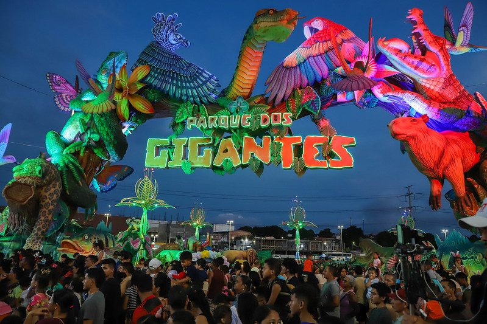
A family theme park in the east of Manaus filled with giant illuminated sculptures of Amazon animals — a fun, magical outing, especially for kids.
Our team can help arrange city tours, the Meeting of the Waters trip, and transfers to and from the lodge. Reach out and we'll point you to trusted local guides and the best timing for each attraction.